Daniel Pérez
Mi nombre es Daniel Pérez, soy desarrollador web especializado en Wordpress y Elementor. A lo largo de estos 18 años años he trabajado en una variedad de proyectos, con diferentes tecnologías y enfoques, desde sitios web corporativos hasta aplicaciones web complejas. Mi enfoque es crear soluciones personalizadas que se adapten a las necesidades de mis clientes.





Anmar Predict
Sitio web creado con Wordpress y Elementor como constructor visual. Anmar Predict esta enfocada en el sector de partes mecánicas para diferentes industrias. Es un catálogo como punto de entrada para la venta directa en fábrica por la complejidad de cada producto.
Ir a la web
APP Mejoramos tus seguros
Webapp creada para la gestión de clientes, pólizas y siniestros. Permite la interación entre clientes, gestor y aseguradoras. Para ello fue creado un plugin especifico que explota todas las bondades del entorno Wordpress y Elementor como consturctor visual.
Ir a la web
AuraTech
Web corporativa creada con Wordpress y Elementor como constructor visual. AuraTech es una empresa de servicios tecnológicos que ofrece soluciones a medida para sus clientes.
Ir a la web
Bevicis
Web creada con Wordpress y Elementor como constructor visual. Bevicis es una agencia de publicidad que ofrece soluciones a medida para sus clientes.
Ir a la web
Easy Tax Control
Web creada con Wordpress y Elementor como constructor visual. Easy Tax Control es un esudio de abogados que ofrece soluciones a medida para sus clientes.
Ir a la web
Green and Blue
Web creada con Wordpress y Elementor como constructor visual. Green and blue es una empresa que ofrece servicio de alquiler de Villas en Ibiza y Menorca. En conjunto ofrece servicios de venta de productos básicos para la estadia con un carro de compras creado con Wordpress, Elementor y Woocommerce.
Ir a la web
Misterfy
Web onepage en 3 idiomas, creada con Wordpress y Elementor como constructor visual. Misterfy es una empresa que ofrece servicio de alquiler de Vans en toda la región Europea.
Ir a la web
Mistervan
Web creada con Wordpress y Elementor como constructor visual. Mistervan es una empresa que ofrece servicio de alquiler de Vans en toda la región Europea enfocada en el B2B.
Ir a la web
Tecni Soluciones Industriales Atlántico
Web creada con Wordpress y Elementor como constructor visual. Tecni Soluciones Industriales Atlántico ofrece sus productos industriales a través de un catálogo de productos en la región Europea.
Ir a la web
Confucio Barcelona
Web creada con Drupal. Confucio Barcelona es un colégio privado de origen chino que ofrece educación infantil, primaria y secundaria en Barcelona.
Ir a la web